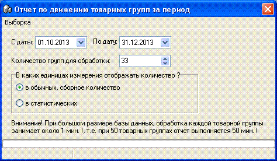
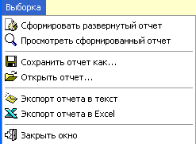

Данный отчет отображает поступление и расход
товара по товарным группам в разрезе всех
статей/документов прихода/расхода товара в программе. Плюсом данного
отчета является его информативность, минусом - низкая скорость выполнения,
особенно на старых компьютерах. Форма отчета показана на рисунке ниже,
рассмотрим ее подробнее.

С даты/По дату - задаем диапазон "в течении
периода" для развернутого отображения прихода/расхода по товарной группе в
данный период. Сальдо на начало периода и на конец периода также будет
подсчитано.
Количество групп для обработки - укажите кол-во
товарных групп, которые вы хотите включить в отчет. Помните про относительно
низкую скорость формирования отчета. Сортировка берется по номеру товарной
группы.
Единицы измерения отображаемого количества -
укажите в каких единицах измерения выводить/суммировать количество по товарным
группам.
В обычных - количество будет просто суммировано,
не взирая на ед.измерения, т.е. если в одной товарной группе есть кг и шт и
литры, то они будут суммированы.
В статистических - количество по каждому товару
каждой выводимой товарной группы вначале будет умножено на значение
статистического количества из карточки этого товара, таким образом все
количества будут приведены к единой единице и размерности - в л или кг, а
затем полученное значение будет умножено на значение статистического множителя
из карточки товарной группы, таким образом суммарное количество по товарной
группе будет отображено, например, в более крупной единице измерения - тоннах,
центнерах или декалитрах.
Главное меню формы позволяет сформировать отчет и
просмотреть ранее сформированный, чтобы снова не ожидать выборки. С этой же
целью сделано сохранение/открытие ранее сохраненных таких отчетов. Формат
хранения данных *.xml. Программа дает возможность указать пользователю путь и
имя файла.

Ниже, на рисунке, показан пример сформированного
отчета.